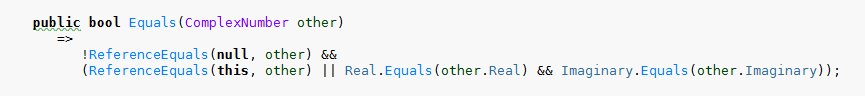
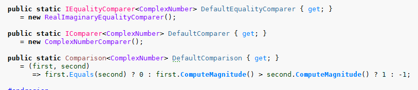

Каноническая форма класса
Чтобы привести класс к канонической форме нужно ответить на вопросы
- Является ли класс POCO-классом
- Является ли объект сортируемым
- Будет ли объект храниться в ассоциативных контейнерах в качестве ключа
- Участвует ли объект в структурных сравнениях
POCO-класс
- Plain Old CLR Object
- POCO-класс - класс, который имеет только данные и не имеет открытых операций для работы к ними
Поддержка сортировки
Рассмотрим POCO-класс ComplexNumber:

Он строго реализует интерфейс IComparable<ComplexNumber> для прямой поддержки сравнения объектов этого класса:

Он строго реализует интерфейс IEquatable<ComplexNumber> для поддержки структурной эквивалентности:
Закрытые поля класса:

Свойства и конструктор:

Статические одиночные экземпляры объектов классов, которые используются в служебных целях:
Переопределение методов класса System.Object:

Закрытые классы:


Шаблон освобождения ресурсов
Неуправляемые ресурсы
public static class Unmanaged
{
[DllImport("kernel32.dll",
CharSet = CharSet.Auto, CallingConvention = CallingConvention.StdCall,
SetLastError = true)]
public static extern IntPtr CreateFile(
string lpFileName,
uint dwDesiredAccess,
uint dwSharedMode,
IntPtr securityAttributes,
uint dwCreationDisposition,
uint dwFlagsAndAttributes,
IntPtr hTemplateFile);
[DllImport("kernel32.dll", SetLastError = true)]
[return: MarshalAs(UnmanagedType.Bool)]
public static extern bool CloseHandle(IntPtr hObject);
}
Шаблон освобождения ресурсов
public abstract class DisposeRoutine : IDisposable
{
private bool IsDisposed { get; set; }
public void Dispose()
{
Dispose(true);
GC.SuppressFinalize(this);
}
~DisposeRoutine()
{
Dispose(false);
}
private void Dispose(bool disposing)
{
if (!IsDisposed)
{
if (disposing)
{
ManagedCleaning();
}
UnmanagedCleaning();
}
IsDisposed = true;
}
protected abstract void UnmanagedCleaning();
protected abstract void ManagedCleaning();
}
Реализация шаблона освобождения ресурсов
public sealed class DisposeRoutineImpl : DisposeRoutine
{
private readonly Stream _managedRes;
private readonly IntPtr _unmanagedRes;
public DisposeRoutineImpl(Stream aRes, string aFileName)
{
_managedRes = aRes;
_unmanagedRes =
CreateFile(aFileName,
0x80000000, 1, IntPtr.Zero, 3, 0, IntPtr.Zero);
}
protected override void UnmanagedCleaning()
{
if (_unmanagedRes != IntPtr.Zero)
{
CloseHandle(_unmanagedRes);
}
}
protected override void ManagedCleaning() => _managedRes.Dispose();
}
Использование шаблона освобождения ресурсов
using (var routineImpl =
new DisposeRoutineImpl(
new FileStream("Test1.test", FileMode.Create), "Test2.test"))
{
Console.WriteLine(routineImpl);
}